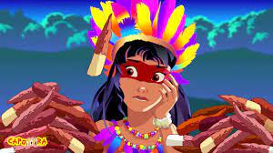

ESCUTE ESSA MÚSICA DE PRODUÇÃO INDÍGENA:
O MISTICISMO INDÍGENA
Nesse site tenho o objetivo de trazer a vocês um pouco do conhecimento das lendas e mitos indígenas
-
Uiara (Yara ou Iara) - a rainha das águas
A jovem Tupi Uiara era a mais formosa mulher das tribos que habitavam ao longo do Rio Amazonas. Por sua doçura, todos os animais e plantas a amavam. Mantinha-se, entretanto, indiferente aos muitos admiradores da tribo. Em uma tarde de verão, após o Sol se pôr, Uiara permanecia no banho, quando foi surpreendida por um grupo de homens estranhos. Sem condições de fugir, a jovem foi agarrada e amordaçada. Acabou por desmaiar, sendo violentada e atirada ao rio. O espírito das águas transformou o corpo de Uiara em um ser duplo. Continuaria humana da cintura para cima, tornando-se peixe no restante. Uiara passou a ser uma sereia, cujo canto atrai os homens de maneira irresistível. Ao verem a linda criatura, eles se aproximam e são arrastados para as profundezas, de onde nunca mais voltarão. -

Mandioca - o pão indígena
Mara era uma jovem índia, filha de um cacique, que vivia sonhando com o amor e um casamento feliz. Certa noite, Mara adormeceu na rede e teve um sonho estranho. Um jovem loiro e belo descia da Lua e dizia que a amava. O jovem, depois de lhe haver conquistado o coração, desapareceu de seus sonhos como por encanto. Passado algum tempo, a filha do cacique, embora virgem, percebeu que esperava um filho. Para surpresa de todos, Mara deu à luz uma linda menina, de pele muito alva e cabelos tão loiros quanto a luz do luar. Deram-lhe o nome de Mandi (ou Maní) e na tribo ela era adorada como uma divindade. Pouco tempo depois, a menina adoeceu e acabou falecendo, deixando todos amargurados. Mara sepultou a filha em sua oca, por não querer separar-se dela. Desconsolada, chorava todos os dias, de joelhos diante do local, deixando cair leite de seus seios na sepultura. Talvez assim sua filha voltasse à vida, pensava. Até que um dia surgiu uma fenda na terra de onde brotou um arbusto. A mãe se surpreendeu. Talvez o corpo da filha desejasse dali sair. Resolveu então remover a terra, encontrando apenas raízes muito brancas, como Mandi (Maní), que, ao serem raspadas, exalavam um aroma agradável. Todos entenderam que criança havia vindo à Terra para ter seu corpo transformado no principal alimento indígena. O novo alimento recebeu o nome de Mandioca, pois Mandi (Maní) fora sepultada na oca. -
Guaraná – a essência dos frutos
Aguiry era um alegre indiozinho, que se alimentava somente de frutas. Todos os dias saía pela floresta à procura delas, trazendo-as num cesto para distribuir entre seus amigos. Certo dia, Aguiry se afastou demais da aldeia e se perdeu na mata. Jurupari, o demônio das trevas que tinha corpo de morcego, bico de coruja e também se alimentava de frutas, vagava pela floresta quando encontrou o índio não hesitou em atacá-lo. Os outros índios encontram Aguiry morto ao lado de um cesto vazio. Tupã, o deus do bem, ordenou que retirassem os olhos da criança e os plantassem sob uma grande árvore seca. Seus amigos deveriam regar o local com lágrimas, até que ali brotasse uma nova planta, da qual nasceria o fruto que conteria a essência de todos os outros, deixando mais fortes e mais felizes aqueles que dele comessem. A planta que brotou dos olhos de Aguiry possui sementes em forma de olhos e recebeu o nome de guaraná. -

Curupira
Trata-se de um ser do tamanho de uma criança de seis ou sete anos, peludo como o bicho preguiça, de unhas compridas e afiadas, com o calcanhar para frente e os dedos dos pés para trás, que anda nu pela floresta. Ele toma conta da mata e dos animais e mora nos buracos das árvores que tem raízes gigantescas, muito comuns na Floresta Amazônica. O curupira ajuda os caçadores e os pescadores que lhe oferecem cachaça, fósforo e fumo. Esta oferta é para que o indivíduo tenha fartura nas caçadas, pescarias e roçados. As pessoas que não têm devoção pelo curupira sentem medo, enjôo e náuseas a quilômetros de distância dele. Com essas pessoas, ele brinca fazendo com se percam na mata. Para se livrar do curupira deve-se cortar uma vara, fazer uma cruz e colocar em um rolo de cipó tumbuí, bem apertado. Ele vê esse objeto e procura desmanchar o enrolado. Enquanto fica entretido em desmanchar o enrolado, a pessoa tem tempo para fugir. -
Saci Pererê
Muito esperto e travesso, ele aparece sempre às sextas-feiras, à noite, pulando com uma perna só, mostrando seus olhinhos brilhantes e os dentes pontiagudos. Usa uma camisa e uma carapuça vermelha na cabeça e traz em uma das mãos um cachimbinho de barro. Sua tarefa é carregar para uma mata muito distante crianças desobedientes e manhosas, gorar ovos de ninhadas, queimar balões, azedar leite, fazer o milho de pipoca virar piruá e atacar os viajantes, pedindo fumo e fogo. Se alguém recusa seu pedido, ele faz cócegas na pessoa até que ela morre de tanto rir. -

Boto
É o mais importante habitante encantado do Rio Amazonas. À meia-noite ele se transforma em homem, andando por cima dos paus das beiradas do rio, de preferência sobre os buritizeiros tombados nas margens. Veste roupa branca e usa um chapéu branco para ocultar uma abertura no alto da cabeça por onde sai um forte cheiro de peixe e hálito de maresia. Ele aparece tão elegante nas festas que encanta e seduz as donzelas. Dança a noite toda com as mais jovens e mais bonitas da festa. Sai com elas para passear e antes do amanhecer pula na água e volta à forma primitiva de peixe, deixando as moças sempre grávidas. Além de sedutor e fecundador é conhecido também como o pai das crianças de paternidade desconhecida, pois as mães solteiras o acusam de ser o pai de seus filhos. O boto-homem é obcecado por mulheres, sente o cheiro feminino a grandes distâncias. Para evitar que ele apareça esfrega-se alho na canoa, nos portos e nos lugares onde ele gosta de aparecer. -
Uirapuru
Certa vez um jovem guerreiro apaixonou-se pela esposa do grande cacique, mas como não podia se aproximar dela pediu a Tupã (Lua) que o transformasse em pássaro. Tupã fez dele um pássaro de cor vermelho-telha, que toda noite ia cantar para sua amada. Quando cacique notou seu canto tão lindo e fascinante, perseguiu a ave para prendê-la só para si. O uirapuru voou para bem distante da floresta e o cacique que o perseguia, perdeu-se dentro das matas e igarapés e nunca mais voltou. O lindo pássaro volta sempre, canta para a sua amada e vai embora, esperando que um dia ela descubra seu canto e seu encanto.
-
Caipora
Trata-se de um menino de pele escura, pequeno e rápido, cabeludo e feio, que fuma cachimbo, e tem a função de proteger os animais da floresta, os rios e as cachoeiras. Vive sondando as matas montado em um porco, sempre com uma longa vara na mão. Quando o caçador se aproxima o caipora pressente sua chegada através do vento que lhe agita os cabelos. Então sai a galope em seu porco fazendo barulho para espantar veados, coelhos, capivaras e outros animais de caça. Às vezes, o caçador, sem ver direito, corre atrás do próprio caipora que montado em seu porco faz zigue-zague pelo mato até perder-se de vista.
ESPERO QUE GOSTEM DO MEU PRIMEIRO SITE